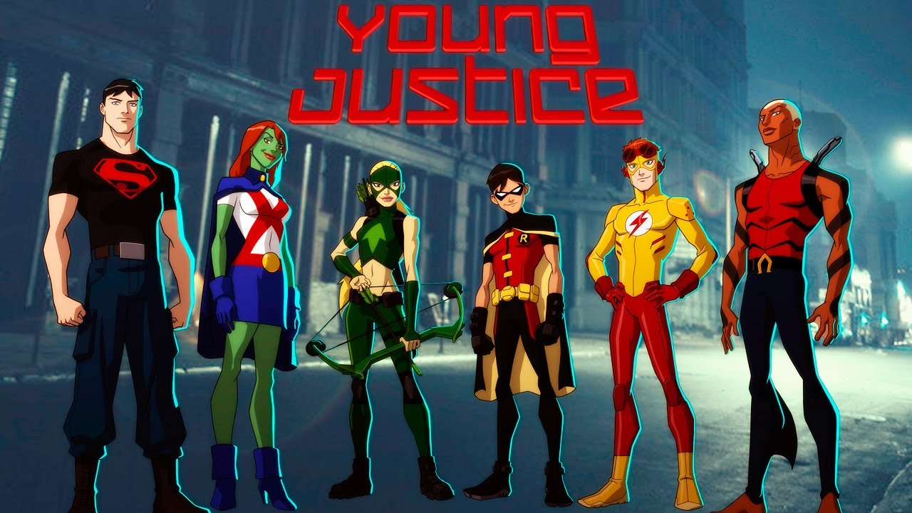
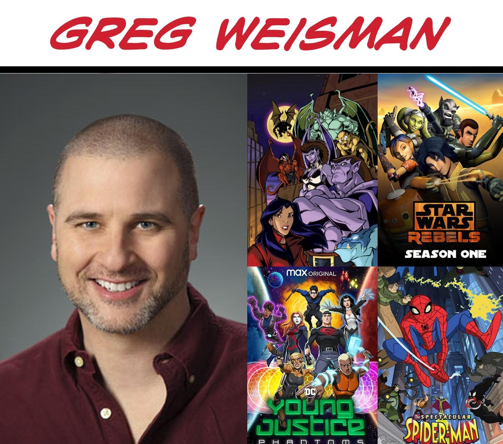
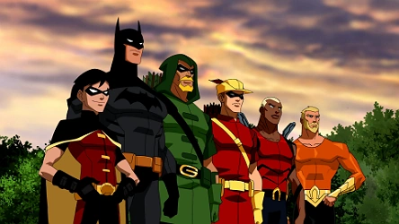

historia base de sua primeira temporada
Após derrotarem vilões de gelo no Dia da Independência, Robin, Kid Flash, Aqualad e Ricardito são levados à base da justiça em Washinton D.C., mas ao saber que não seriam revelados todos os secretos da liga, Ricardito se enfurece com Flash, Batman, Aquaman e Arqueiro Verde ele se demite do cargo de "ajudante" para viver uma vida de herói solo. Assim, os sideckick resolvem ir a uma missão no laboratório de CADMIS, onde descobrem que estaria sendo feito um androide com o DNA de Superman: Superboy, então o soltam e destroem o laboratório e são surpreendidos pela Liga da Justiça que decidem formar uma equipe secreta contra vilões, onde logo seriam formados também por Miss Marte e Artemis.
A primeira temporada
A Linha do Tempo da série Young Justice (que se passa na Terra-16 do Multiverso DC) é uma representação cronológica da continuidade da série. O produtor Greg Weisman mantém um documento com a linha do tempo que os roteiristas e produtores da série usam durante a criação. Em 3 de dezembro de 2010, esse documento tinha 139 páginas. [ 1 ] Em 10 de dezembro de 2021, ele havia crescido para 718 páginas. [ 2 ]
Oficialmente, a série não tem um ano canônico, mas para a primeira temporada , os produtores usaram 2010 como base para os dias da semana e para calcular o tempo em relação a eventos passados. Assim, o ano de 2010 é usado para a primeira temporada nesta linha do tempo. Em " Schooled ", uma placa indicava 2011, porém, isso é um erro. [ 3 ] Durante a peça radiofônica não canônica Musicology 101: Songs of the Theme , escrita por Greg Weisman , é afirmado que a primeira temporada ocorreu entre 4 de julho de 2010 e 1º de janeiro de 2011.

Aqualad, que assumiu o comando durante o incidente com a Cadmus , atuou como líder da Equipe inicialmente, embora outros membros da Equipe tenham atuado como líderes em situações em que nem todos os membros estavam disponíveis para uma missão. Com o passar do tempo, as fileiras cresceram à medida que mais membros da Liga da Justiça apresentaram seus jovens protegidos ou outros jovens heróis à Equipe. Quatro anos depois, Asa Noturna tornou-se o novo líder da Equipe. Aqualad reassumiu a liderança da Equipe após o término de sua missão de infiltração na Luz. Dois anos depois, Miss Marte assumiu a liderança até renunciar oficialmente em 24 de fevereiro de 2019.
Seu surgimento
Em Justiça Jovem , ser adolescente significa provar seu valor constantemente — para colegas, pais, professores, mentores e, principalmente, para si mesmo. Mas e se você não for apenas um adolescente comum? E se você for um super-herói adolescente? Você está pronto para se juntar às fileiras dos grandes heróis e provar que é digno da Liga da Justiça ? É exatamente isso que os membros da Justiça Jovem — Robin , Aqualad , Kid Flash , Superboy , Miss Marte e Artemis — descobrirão: se eles têm o que é preciso para se tornarem heróis de verdade. Esta emocionante série de aventuras é produzida pela Warner Bros. Animation e baseada nos personagens da DC Comics. Sam Register ( Jovens Titãs , Batman: Os Bravos e os Destemidos ) é o produtor executivo. Brandon Vietti ( Batman: Contra o Capuz Vermelho , The Batman ) e Greg Weisman ( Gárgulas , O Espetacular Homem-Aranha ) são os produtores.

Young Justice abrange quatro temporadas, com cada episódio datado para refletir seu lugar na linha do tempo. Ambientada no Multiverso DC , especificamente na Terra-16 , a série centra-se em uma equipe de jovens ajudantes lutando para fazer seu nome: Robin , Kid Flash , Aqualad , Superboy , Miss Martian e Artemis , que operam como agentes secretos sob a orientação da Liga da Justiça . Embora a Liga da Justiça exista na série, ela é mantida principalmente em segundo plano. A primeira temporada se desenrola ao longo de aproximadamente seis meses, durante um período em que os super-heróis ainda são um "fenômeno relativamente novo". Ela se concentra em como esses ajudantes se descobrem, apresentando gradualmente os personagens e, por fim, reunindo a equipe

Mesmo sem a presença de um trailer demonstrativo, sua abertura poderia ser facilmente reconhecida como uma, segue o vídeo abaixo: